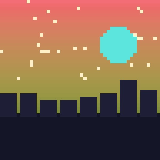
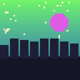

Three directions that would make the whole app feel like the Home harbor, not just its header. Each is a mockup, not built. They can mix: the dock quiz works with either panel style.
The quiz becomes a scene. She fishes from the dock in the same harbor as Home, the sung line arrives as an RPG dialogue box with the artist's name tag, and the answers are a command menu with a cursor. The combo is the fish in her bucket, and a perfect run lands a gold koi.
Cost: medium. One new screen layout and a fish sprite; the quiz logic is unchanged.
Take the panels from the banner instead of a generic dark UI: wooden signs hung on rope for titles and the review card, a plank tab bar, and settings pinned to a cream notice board. The black stays, but the surfaces become dock materials.
Cost: medium. A second frame style next to PixelFrame and a palette pass; no layout logic changes.

春のまにまに
月とコーヒーThe fog map grows into an actual map. Each song is an island; its sentences are the island's tiles, under fog until you clear them. Albums are archipelagos, perfect runs plant a koi flag, and Review shows the islands where fog is rolling back in today.
Cost: high. A new map screen with layout for any library size. Best after the other two.